Electronics Production
Group Assignment
- Characterize the specifications of your PCB production process
Individual assignment
- Make an in-circuit programmer by milling the PCB, then optionally, trying other processes.
Learning outcomes:
- Describe the process of milling, stuffing, de-bugging and programming
- Demonstrate correct workflows and identify areas for improvement if required
Have you:
- Shown how you made and programmed the board
- Explained any problems and how you fixed them
- Included a ‘hero shot’ of your board
Group Assignment
Go to for the group assignment page
Individual Assignment
This week I will be making a ISP (In-system programming) or in-circuit programmer.
I chose to do Brian's ISP. I chose it for its simplicity and cost as it is striped down to a bare minimum of components.
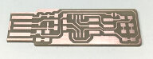
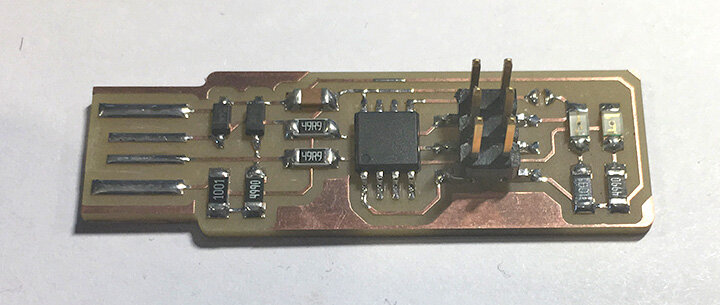
The process will be split in phases, Milling, Stuffing/Populating, De-buging, Programing:
Milling
On this phase I will be using the following:
Fab Modules
- I started by downloading the Traces (1000 dpi) and Outline Cutout (1000 dpi) of the circuit provided at Brian's tutorial.

- At Fab modules
I selected the option "image (.jpg)"
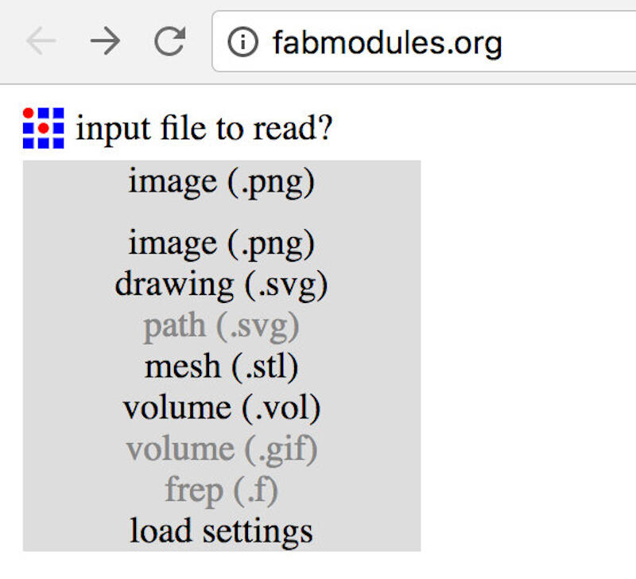
I choose the image file
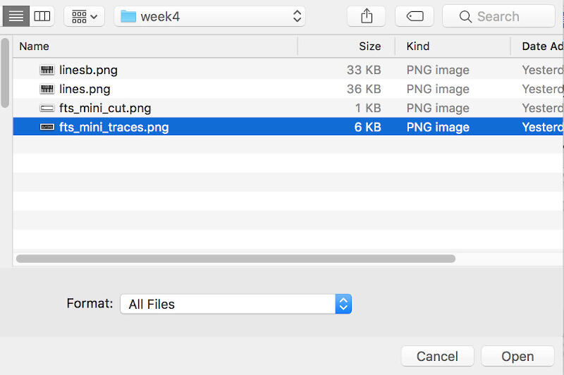
Once image is loaded I selected "output format" and then "G-codes (.nc)"
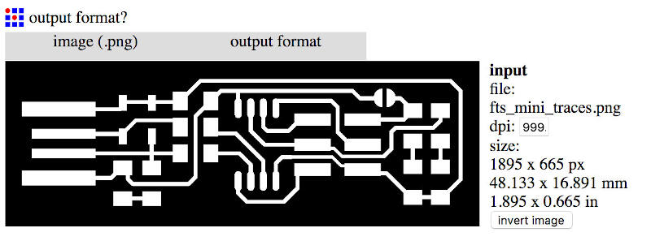
On Process I selected "PCB traces (1/64)"

Before calculating I changed the cut depth to 0.05, half of the default value as I was being a bit cautious on it.
Then pressed calculate
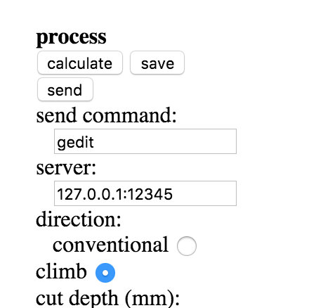
After calculation I proceed with an inspection of the tool path to make sure that all traces were covered. By holding left mouse key I was able to move the image and with the wheel button I could zoom the image to better check the tool path.

By holding right mouse key I was able to even see it with a different perspective.
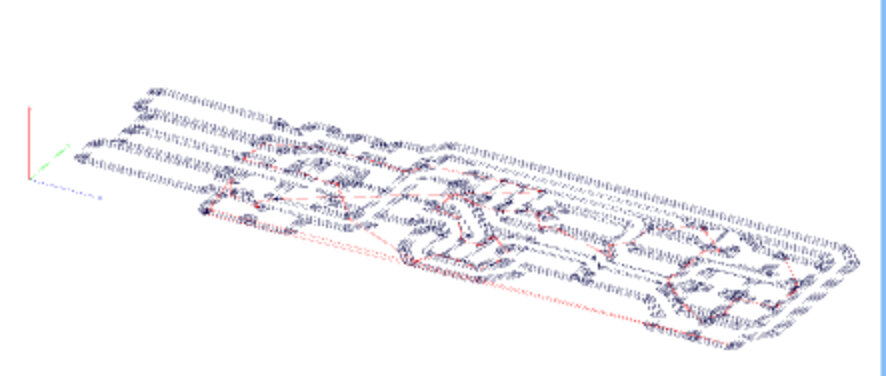
Last I saved the file for the milling process.
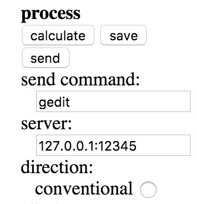
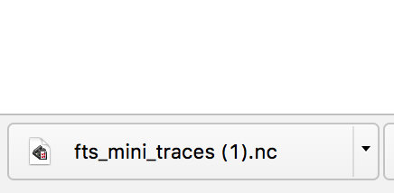
To outline I followed the same steps as before except I chose to "PCB outline (1/32)" instead of traces.
2- Mach3
I started the preparation of the cnc by milling a pocket the size of the blank PCB (76x50x1.5mm)
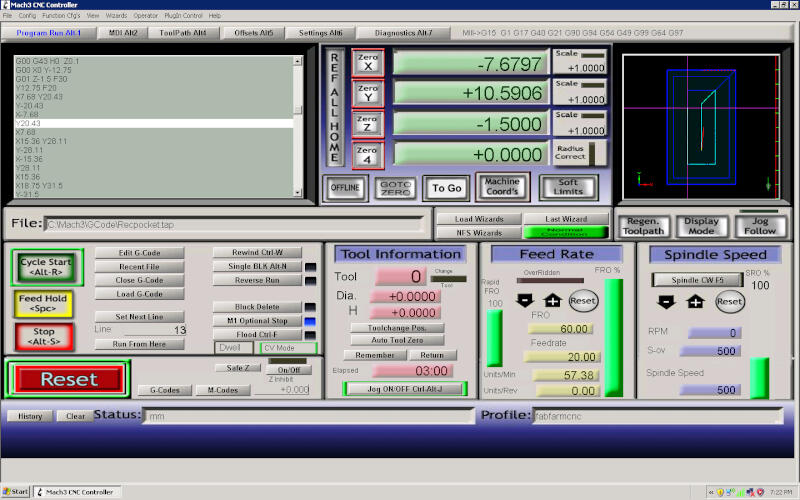
Milling the pocket
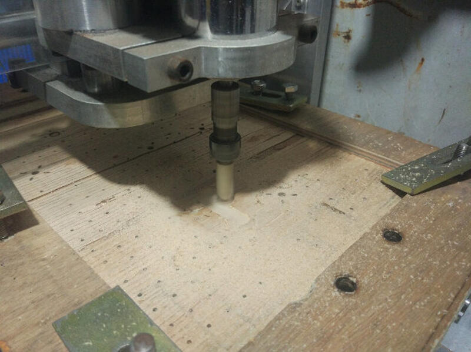
Finished pocket
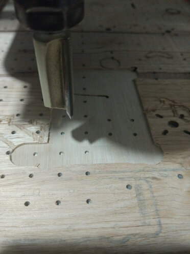
Gluing double face tape on the FR1 board
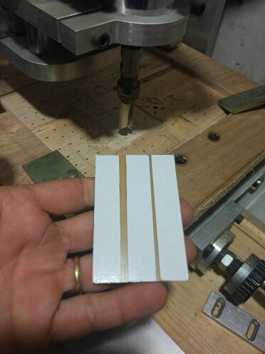
The end result is this.
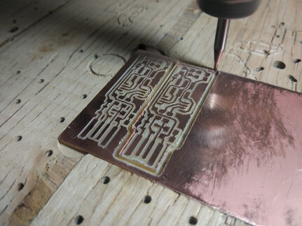
Milling the cutout of one of the ISP's
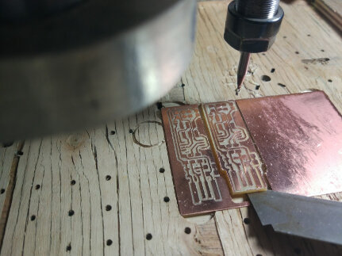
Removing the PCB from the pocket.
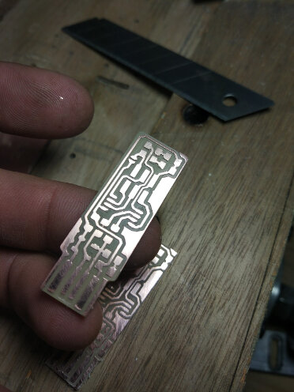
I used a blade and sandpaper to remove shavings left from the milling process.
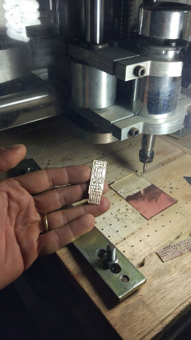
Removed the double face tape from behind the pcb.
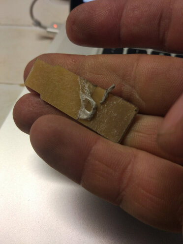
3. Stuffing
Basing on Brian's ISP's page tutorial I started by creating a spreadsheet with the components and its positions.
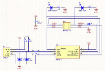
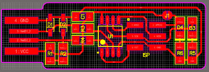
BOM
|
Components |
Location |
Digikey or Mouser Part number |
Manufacture Part # |
|
- ATtiny45 or ATtiny85 |
U1 |
ATTINY45V-10SUR |
|
|
- 2x 1kΩ resistors |
R1, R6 |
RC1206FR-071KL |
|
|
- 2x 499Ω resistors |
R2, R5 |
RC1206FR-07499RL |
|
|
- 2x 49Ω resistors |
R3, R4 |
RC1206FR-0749R9L |
|
|
- 2x 3.3v zener diodes |
D1, D2 |
BZT52C3V3-7-F |
|
|
- 1x red LED |
D4 |
LTST-C150CKT |
|
|
- 1x green LED |
D3 |
LTST-C230TBKT |
|
|
- 1x 100nF/0.1uF capacitor |
C1 |
C1206C104KARACTU |
|
|
- 1x 2x3 pin header |
ISP |
71600-006LF |
After that I proceed soldering all components in place.
3- Pre-Debugging
I started with a visual inspection.
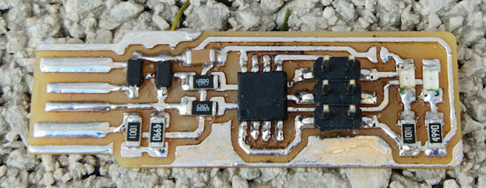
OK I need to clean a bit more
With the multimeter I looked for shorts and nothing was detected especially between Vcc and GND.
Overall the board seemed fine so I proceed with the programing.
4- Programming
In order to program the programmer fabricated, I make use of a hardware called UsbASP. Extracted from Thomas Fischl's website he describes it as:
"USBasp is a USB in-circuit programmer for Atmel AVR controllers. It simply consists of an ATMega88 or an ATMega8 and a couple of passive components. The programmer uses a firmware-only USB driver, no special USB controller is needed."

You use it just like the tinyUSB.
The header poking out of the transparent plastic cover is to program at 8 or 16 Mhz, the USBasp I have does not detect speeds automatically speeds so simply install a jumper to change speed modes. This is necessary for example when programing the ATTINY44 or 45 (slower speeds) while with an IC like the AT90USB1286 can be programed at 16 Mhz. The new firmware on this programmers usually can detect the speed of the chip automatically like the ones sold today at Aliexpress for less than 2 dolars.
So going back to the software, under Ubuntu for Windows 10 (Linux windows subsystem). I Started by installing the programing environment with the code sudo apt-get install avrdude gcc-avr avr-libc make
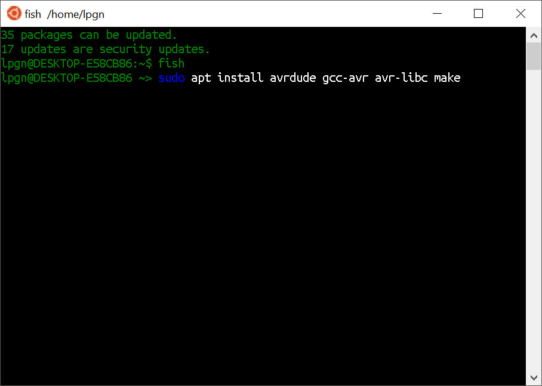
With the prior command the programs got downloaded.
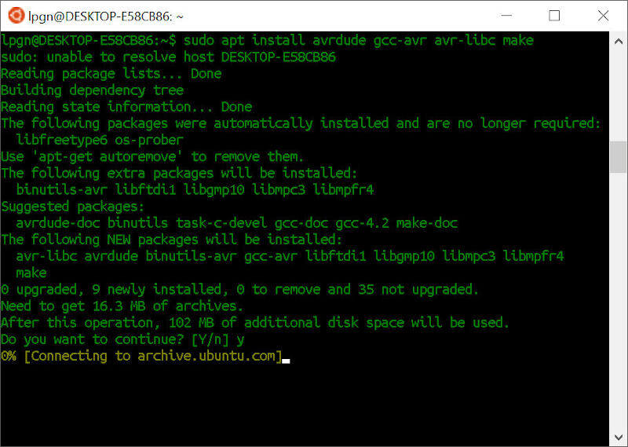
I then downloaded the firmware source to a directory. Following that I run the command make
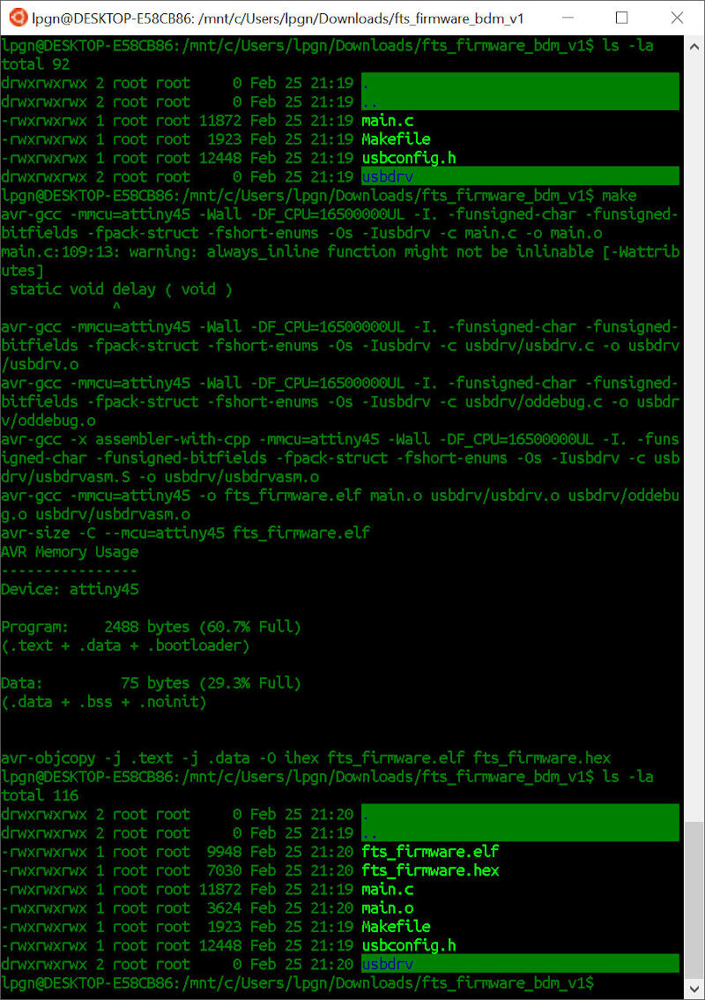
Using Sublime-text I edited the makefile file and replaced the entry "PROGRAMMER ?= usbtiny" with "PROGRAMMER ?= usbasp".
As explained before making a USBtiny I did not have a programmer other than the USBasp so thats why I replaced the code with the one compatible to my device.
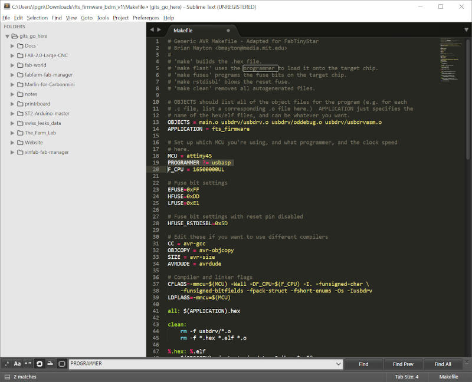
I then run
make flash
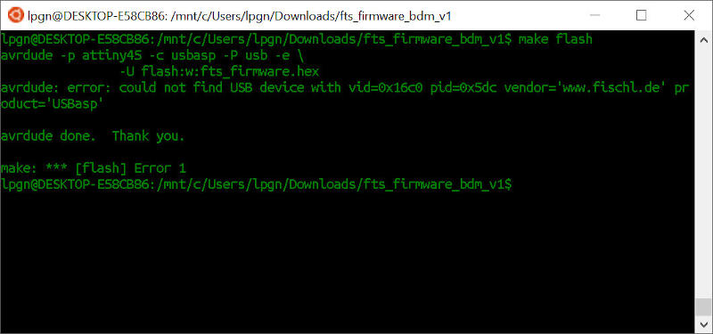
But no success. So I run lsusb to get the list of avaiable usb devices.
and I get a message “unable to initialize libusb: -99
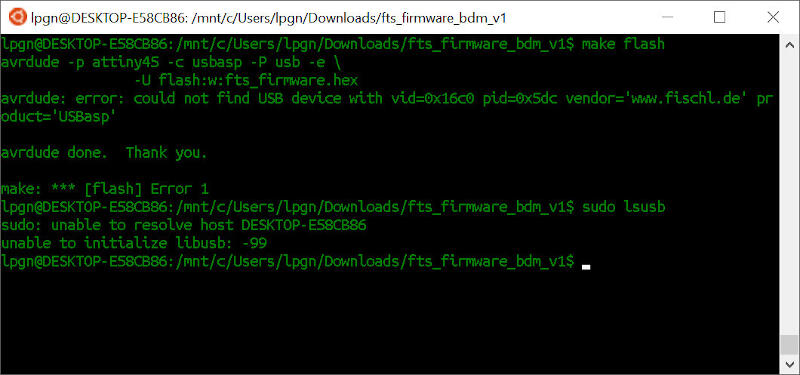
After a quick search on stackoverflow I find out there is no support for usb under windows 10 ubuntu shell yet! Argh!
note: I haven't confirmed yet but aparentelly in 2020 the usb is suported in Windows linux subsystem OS but not at the time of making this exercises.
Then I gave up on Ubuntu bash for windows 10 and run a copy of Ubuntu under VMware player. At ubuntu I run:
sudo apt install avrdude gcc-avr avr-libc make

This time after running lsusb I can see that device is present.
I run
make
in order to compile the firmware.
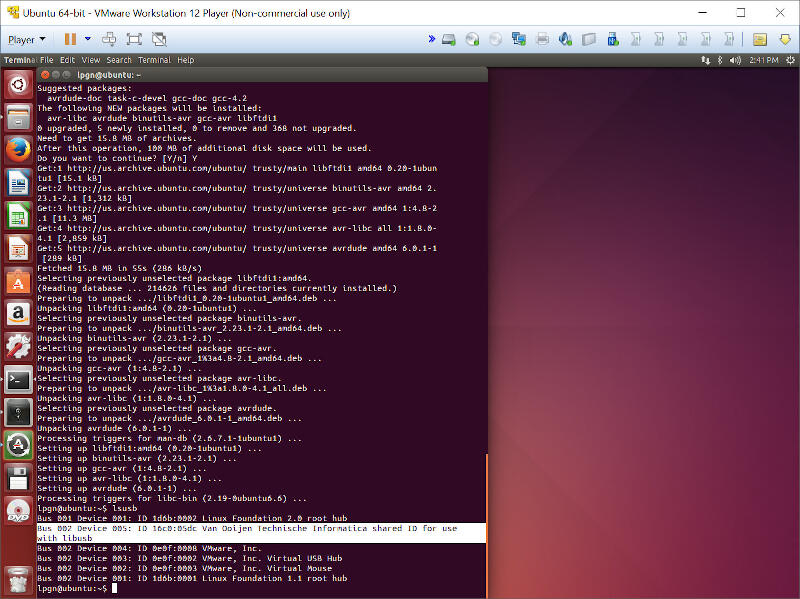
I then run
make flash
But again I got an error message.
I realize that Brian's ISP has to have a jumper installed in order to program the Attiny45 and yes I forgot to solder the jumper.
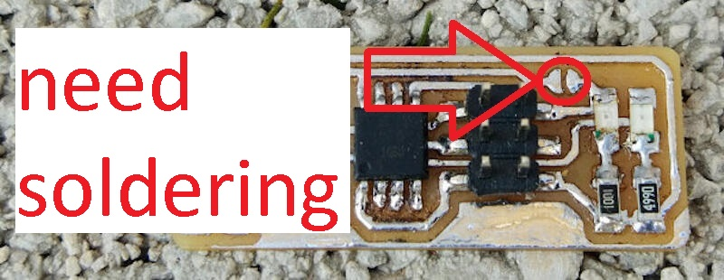
That made me remove the shrink tube I had installed prior.
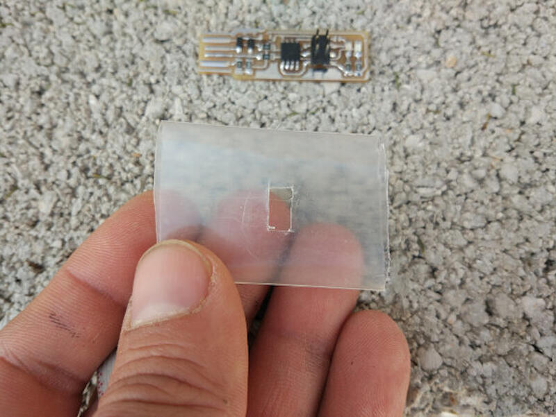
So I do it!
And it works!
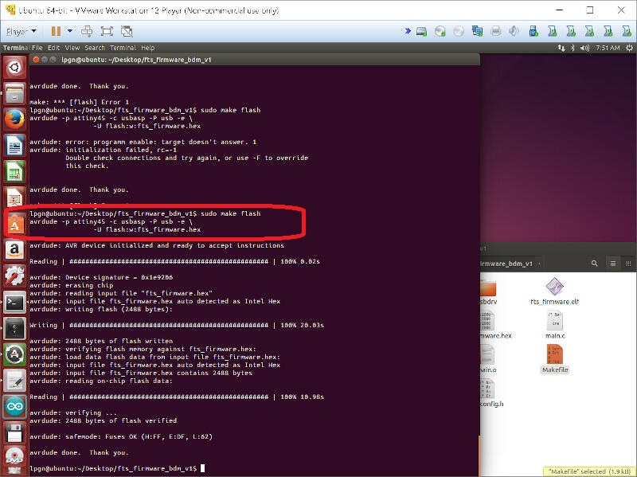
Next I run
make fuses
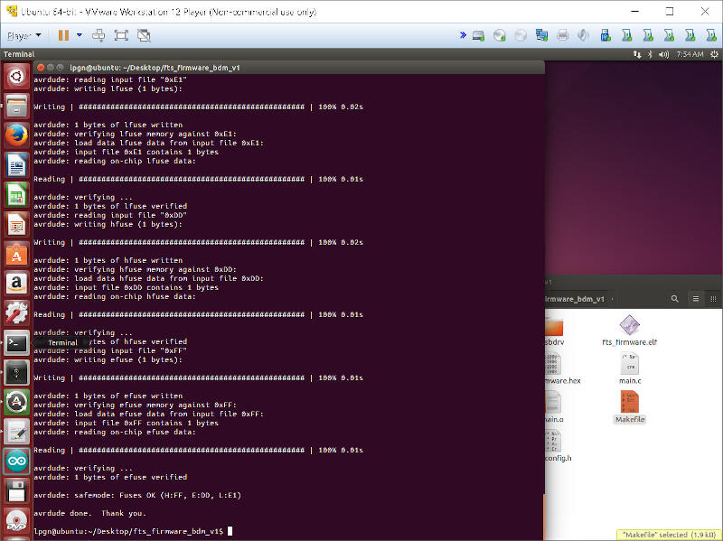
After having the firmware uploaded and fuses burnt my new ASP would not be recognised.
So back to debugging…
I end up measuring each resistor value, and replacing the attiny with a new one. With a multimeter I found out that the R1 1K resistor was not working, replaced and voila. Board detected!!! Oh also I decided to install a usb connector I cut from an old cable and after some washing that's how it looks.
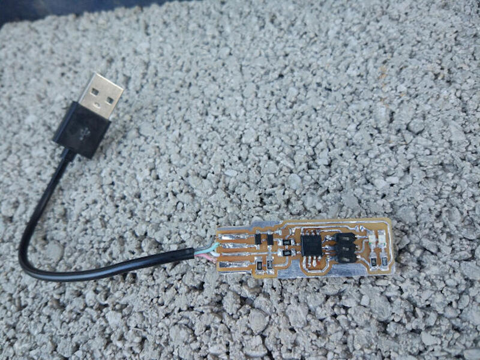
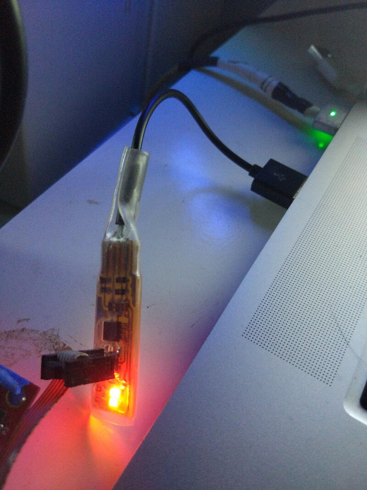
Final command make rstdisbl
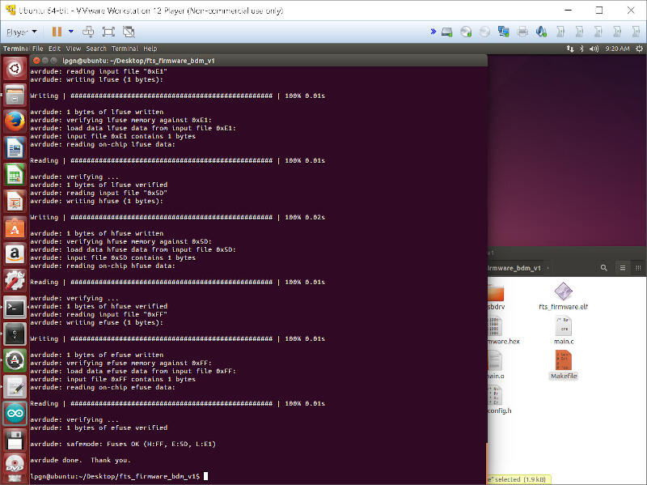
It worked! Now I remove jumper!
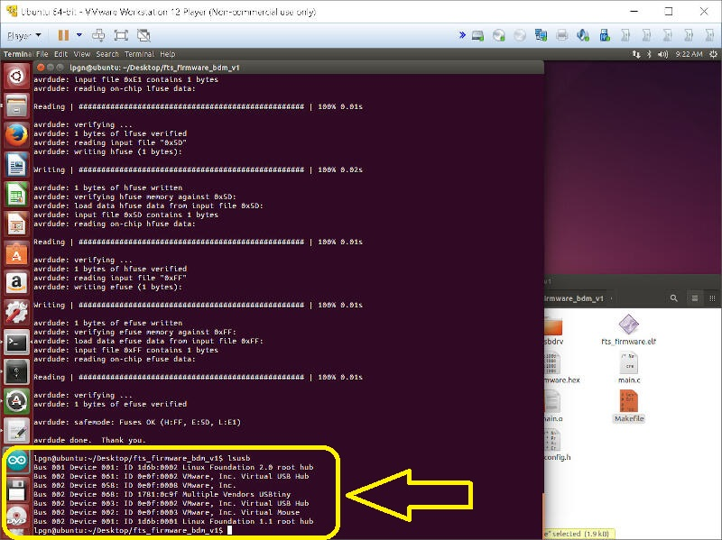
It works! That is proved by the detection of the USBtiny by the linux command lsusb as its shown in the picture above and zommed bellow:
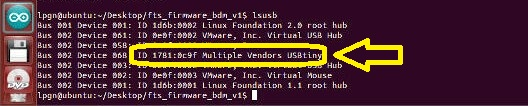
5- Final Test
Not tired of changing platforms I decided to test Windows. here I print how I load the driver for my USBasp. I use this very usefull software that makes installing drivers on windows 10 less traumatic.
Loading the driver on windows I use the tool "Zadig_2.2.exe"

Here I show a recent print the proves the USBtiny is detected under windows. Since I have done this exercise years ago I do not have the driver installation procedure outlined for windows but I have showed its detection before on Linux as well as now on Windows.
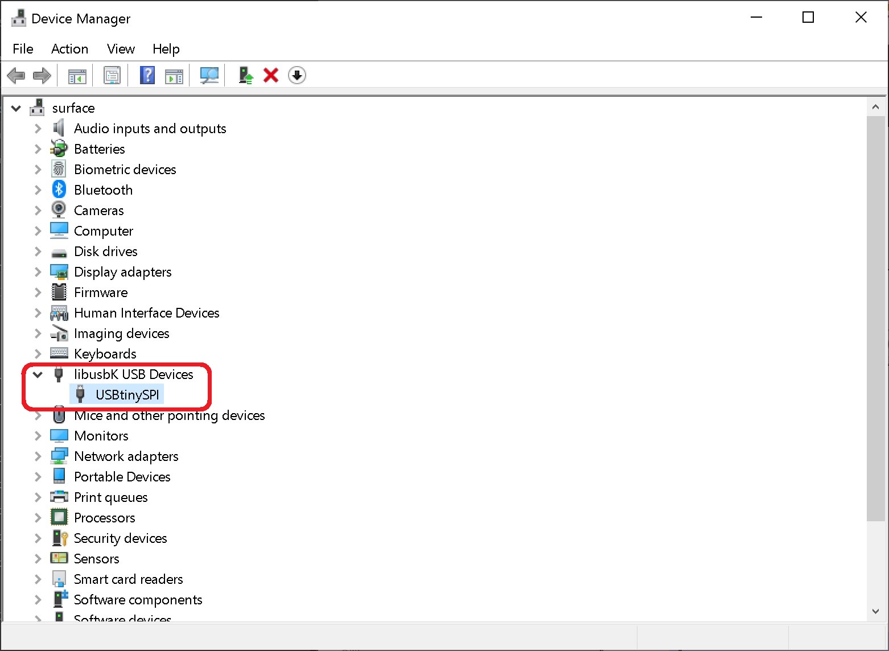
After the driver installation I tested under windows the burning of my 3D printer board's firmware. The firmware I burned as just outlined was the firmware for a Printrboard I made years ago with the open source plans.
In the terrible fotage bellow you can see this happening with the code avrdude -c usbtiny -p at90usb1286 -U flash:w:BootloaderHID.hex:i -U lfuse:w:0xDE:m -U hfuse:w:0xdb:m -U efuse:w:0xF0:m
To eliminate confusions weather the USBtiny fabricated burns or not, lets dissect the code above:
- the first part
avrdudeis the name of the program. - then
-c usbtinydefines the programmer name, "usbtiny" is the fabricated programmer name - Next
-p at90usb1286is the target IC to be programmed, here the at90usb1286 that is installed on my printrboard. -
-U flash:w:BootloaderHID.hex:idefines the name/location of the firmware to be loaded, in this case "BootloaderHID.hex" -U lfuse:w:0xDE:m -U hfuse:w:0xdb:m -U efuse:w:0xF0:mis the part of the command that burn the fuses.
The above mentioned is shown in the terrible footage ;-) bellow
All working!